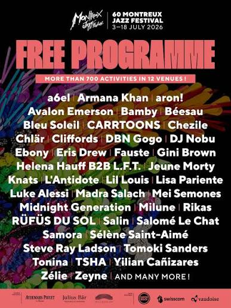
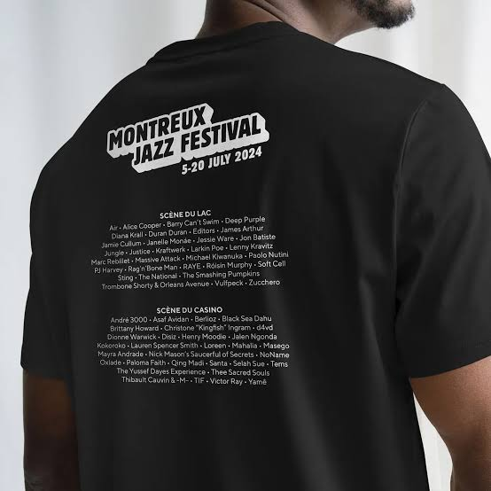

Introduction
Le Montreux Jazz Festival a été créé en 1967 par le musicien Claude Nobs, aidé de René Langel et Géo Voumard. À ses débuts, le festival ne durait que trois jours et ne disposait que d'un budget de CHF 10'000. De nos jours, le festival a pris de l'envergure et dure environ deux semaines.
Malgré son nom, le festival ne se limite pas au jazz. Son objectif est de réussir à faire cohabiter des artistes ayant déjà acquis une certaine notoriété et des artistes émergents afin de réunir tous types de publics. Son identité repose également sur son cadre, qui s'étend jusqu'au bord du lac Léman. Le festival se présente comme un lieu où se rencontrent histoire musicale et création contemporaine.
Qui sont les acteurs liés à cet événement ?

La Fondation du Festival de Jazz de Montreux (FFJM)
La Fondation du Festival de Jazz de Montreux (FFJM)
Véritable acteur central de l'évènement, cet organisme organise chaque année le festival. Il est aussi propriétaire de la marque Montreux Jazz Festival.

Mathieu Jaton
Mathieu Jaton
1999 : Mathieu Jaton commence à travailler au Montreux Jazz Festival en tant que responsable du marketing et du sponsoring. Ces deux dimensions essentielles à la visibilité du festival lui donnent la possibilité de travailler sur l'image de l'évènement tout en côtoyant ses partenaires privés.
2001 : Il obtient le poste de secrétaire général, qui lui confère un rôle plus large au sein du festival et lui permet de travailler directement avec Claude Nobs, le fondateur du Montreux Jazz Festival.
2013 : À la mort de Claude Nobs, il est nommé directeur général du festival.
2019 : Il fonde Montreux Media Ventures (MMV), une filiale consacrée à la production et à la distribution de contenus musicaux.
2022 : Il devient vice-président du conseil de la Fondation du Festival de Jazz de Montreux.

Équipe de programmation et équipes artistiques
Équipe de programmation et équipes artistiques
Environ six à huit collaborateurs ont pour mission de construire la programmation et de choisir les artistes qui se produiront au cours du Montreux Jazz Festival. Chaque programmateur a sa spécialité musicale ou est responsable d'une scène en particulier, mais toutes les décisions finales sont prises de manière collective. Ils sont à la recherche d'un parfait équilibre entre artistes émergents et artistes connus. Les artistes connus attirent le public et sécurisent les ventes, alors que les artistes émergents représentent une prise de risque pour le festival, mais donnent au public l'opportunité de découvrir de nouveaux talents. Il est aussi possible de trouver des artistes plus spécialisés dans un certain genre musical, qui n'entrent pas forcément dans les deux catégories précédentes. Ils participent à la construction de l'identité artistique du festival. Les programmateurs doivent jongler habilement entre ce qui est artistiquement intéressant, ce que le public veut voir et ce que le festival peut financièrement se permettre.

La Commune de Montreux
La Commune de Montreux
La ville de Montreux est le partenaire institutionnel le plus important du Montreux Jazz Festival. Elle autorise la transformation de l'espace urbain pendant plusieurs semaines. Elle met aussi à disposition ses services communaux, qui participent à l'organisation pratique de l'évènement, notamment en matière de sécurité, de transports publics ou encore de gestion de la circulation. De plus, la ville contribue financièrement au festival. En échange, celui-ci participe à l'attractivité et au rayonnement de Montreux.

Les sponsors et les partenaires privés
Les sponsors et les partenaires privés
Les sponsors et les partenaires privés participent au financement et au fonctionnement du festival. Leur contribution ne se limite pas à l'argent. Ils effectuent aussi des dons de matériel ou participent aux services et à la logistique. Par exemple, l'entreprise de sécurité Securitas met des agents de sécurité à la disposition du festival. En contrepartie, les entreprises bénéficient de la visibilité que leur procure le Montreux Jazz Festival.
Fonctionnement du festival
Le festival s'étend sur deux semaines, avec des scènes payantes et gratuites. La programmation est organisée par style, par lieu et par public cible. Les différents concerts constituent une partie essentielle du modèle économique. Les recettes des concerts payants permettent de financer l'organisation et les artistes, tandis que les concerts gratuits attirent un public plus large dans toute la ville.
En effet, cela induit une véritable transformation temporaire de Montreux, donnant au festival l'apparence d'une ville miniature avec ses propres transports publics, ses restaurants et son système de sécurité. Le fait d'investir autant l'espace public de Montreux fait partie intégrante de l'expérience, car cela permet de créer un cadre idyllique pour le festival.
Cette impression de ville miniature contribue à l'identité du festival, qui a réussi à trouver un équilibre entre un événement culturel de grande qualité et un événement qui reste accessible au public.
Le savais-tu ?
L'incendie du casino de Montreux en 1971 a inspiré la chanson ''Smoke on the water'' des Deep Purple.
Origine du Montreux Jazz Festival
Le Montreux Jazz Festival naît en 1967 à l'initiative du musicien Claude Nobs, avec l'aide de René Langel et Géo Voumard. À l'origine, ils créent un festival consacré principalement au jazz. Cette idée est une véritable innovation pour la région, car il n'existe alors pas d'évènement musical international de cette envergure.
Mais le choix de la ville de Montreux n'est pas anodin. En effet, cette ville possède déjà une vocation touristique, que ce soit grâce à son emplacement au bord du Léman ou à son offre hôtelière. La première édition se déroule au Casino de Montreux et ne dure que trois jours.
Mais le casino brûle en 1971 lors d'un concert de Frank Zappa et des Mothers of Invention, à cause d'un spectateur qui tire avec un pistolet lance-fusée en direction du plafond de la salle. À la suite de cet événement, le festival doit trouver un nouveau lieu et commence à se développer davantage dans la ville.
Au fil des ans, la programmation s'élargit au-delà du jazz afin d'accueillir d'autres styles musicaux, comme le rock, la soul ou encore la pop. Cette évolution permet de toucher un public beaucoup plus large tout en conservant le jazz comme élément fondateur de son identité. Le festival réussit ainsi à devenir un véritable rendez-vous musical international.
Et autour du Montreux Jazz Festival…?
Petit plus : Le Montreux Jazz Festival propose une programmation diversifiée tout en mettant en avant une relation de proximité entre le public et les artistes, avec de nombreuses activités gratuites.
| Pays | Comparatif |
|---|---|
| Allemagne (Jazzopen Stuttgart) | Ce festival prend une tournure moins intimiste et est davantage centré sur les grandes scènes et les têtes d'affiche. |
| France (Jazz à Vienne) | Il propose une programmation moins vaste, mais offre également de nombreuses activités gratuites. |
| Italie (Umbria Jazz) | Le festival est dispersé dans la ville, ce qui réduit la proximité entre le public et les artistes. |
Petit moins : L'identité jazz du festival s'est diluée au fil des éditions.
| Pays | Comparatif |
|---|---|
| Allemagne (Jazzopen Stuttgart) | Le jazz est quelque peu mis de côté pour laisser place à d'autres genres musicaux. |
| France (Jazz à Vienne) | Ce festival a réussi à conserver une forte identité jazz. |
| Italie (Umbria Jazz) | Le festival conserve une forte tradition du jazz, avec de nombreux artistes internationaux. |